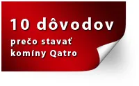

Komíny STADREKO
Najlacnejší certifikovaný komínový systém na Slovensku

1. Jednoduchá montáž formou stavebnice
Komponenty komínového systému Qatro sú vyrobené tak, že na seba presne dosadajú a tým je zaistená presná súčinnosť a stabilita
2. Presná a rýchla výstavba komínového systému Qatro
Lisované komínové tvarovky spojené lepidlom alebo murovacou maltou, zaistí vysokú presnosť. Pre dokonalú rovnosť tvaroviek nie je potrebné vyrovnávať každú vrstvu pri murovaní a tým ušetríte čas pri výstavbe.
3. Je určený pre všetky spotrebiče a stavby
Komínové systémy Qatro sú vhodné pre všetky typy spotrebičov a druhov palív.
4. Vysoká univerzálnosť
Z lisovaných betónových tvárnic je možné postaviť komínové teleso s rôznym počtom prieduchov a typov vnútorných šamotových, alebo nerezových vložiek.
5. Riešenie nadstrešnej časti komína
Pre nadstrešnú časť komína je možné použiť veľa variantov úpravy komína. Komínové teleso je možné omietnuť, obložiť tehlovými pásikmi, tehlami, použiť našu už obloženú tvarovku K3/K4 final, alebo vyskladať na ľubovoľnú výšku z jednotlivých segmentov.
6. Vysoká životnosť a kvalita
Naše systémy prešli všetkými štátnymi skúškami a spĺňajú požiadavky európskych noriem. Životnosť a pevnosť tvárnic komínového systému je daná vlastnosťami betónu, min. 50 rokov.
7. Odborné poradenstvo
Je prístupné všetkým našim zákazníkom na našich webových stránkach.
8. Kompletnosť komínového systému Qatro
Podľa vašej objednávky pripravíme pre vás kompletný komín od spodnej časti až po nadstrešnú časť. Kompletný komín v jednej objednávke s podrobným montážnym postupom v obrázkovom prevedení.
9. Požiarna bezpečnosť
Trojvrstvové komínové systémy Qatro (komínová tvárnica - izolácia - šamotová vložka) vyrobené v najvyššej kvalite, zaručujú komín bez trhlín a netesnosti a to aj v prípade vyhorenia sadzí (teplota nad 1000 °C po dobu 30 minút).
10. Najekonomickejší komín
Bezkonkurenčné ceny na Slovensku.